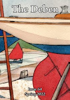
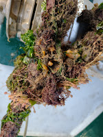
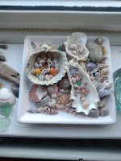
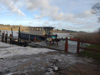
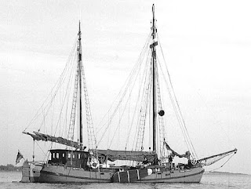

 |
| cover by Claudia Myatt |
{kind=link}
I am its fortunate editor and sometimes like to think of it as the parish magazine of the river. Except that, unlike a parish mag, it doesn’t carry advertising and local event notices are posted by monthly email. So, almost all of those 40 pocket-sized pages are available for contributor articles and photos. As editor I find it endlessly fascinating to read about the different ways people relate to the river – whether they walk by it, sail on it, swim in it, paint it, observe the birds, beasts, plants, fish, creepy-crawlies that live in it. One of my favourite articles was when someone started identifying what might wriggle out when you pull up a mooring rope that hasn’t been used for some time.
 |
| A colonised mooring warp |
{kind=link}
The choice of front cover is always a big moment. The river, in all its moods, is beautiful (I think) and it would be easy to have some glorious photo every issue There are plenty of photos inside the magazine and on our Facebook page but for the front cover we present the river through the eyes of a local artist. Yesterday I went to meet Jackie Brinsley who was born by the river at Waldringfield, married a boy from another river family and has lived in the Deben area all her life – except for years spent living in Rhodesia and Swaziland, and annual holidays in the isles of Scilly. She’s taught generations of children at the local school but, now retired, is pouring her energy and passion into paint.
 |
| cowrie shells collected by Jackie |
{kind=link}
I also edit the Deben magazine’s more serious sister, the RDA Journal. This is a fortnightly article posted online with greater detail and more scope for photos and diagrams than is possible in the mag. I tend to think of the Journal articles as having more archival value and interest for researchers in the future. A year ago I thought it would be interesting to collect information about the older boats on the river, those built before 1950, which were still on the river during 2025. I wrote an article for the Journal devised a form and waited for responses. https://www.riverdeben.org/rda-journal/pre-1950-boats-still-floating-2025/
Some came - two Dunkirk boats, a class of dinghies built immediately after WW2 and still sailing every week, a yacht that had been in the same family for 100 years, a Danish fishing boat, the charming Deben-built Cherubs, my own Peter Duck but I began to realise that I wasn’t really hearing from as many people as I’d expected, particularly from the people who live aboard the many former working boats which spend their retirement here. I had a sinking feeling that my approach was wrong – people living on boats are often trying to get away from the world of forms and data collection. Did it feel intrusive? These boats were also people's homes. What to do for the best?
 |
| Lightcliffe - a barge which carried cargo for 84 years on the Humber and now makes the basis for a home on the Deben |
{kind=link}
 |
| Aenna te Gondern in Germany |
{kind=link}
I walked on with my notebook and camera until it was too dark to see any more, went to a meeting and then came home to write.
{kind=link}
.